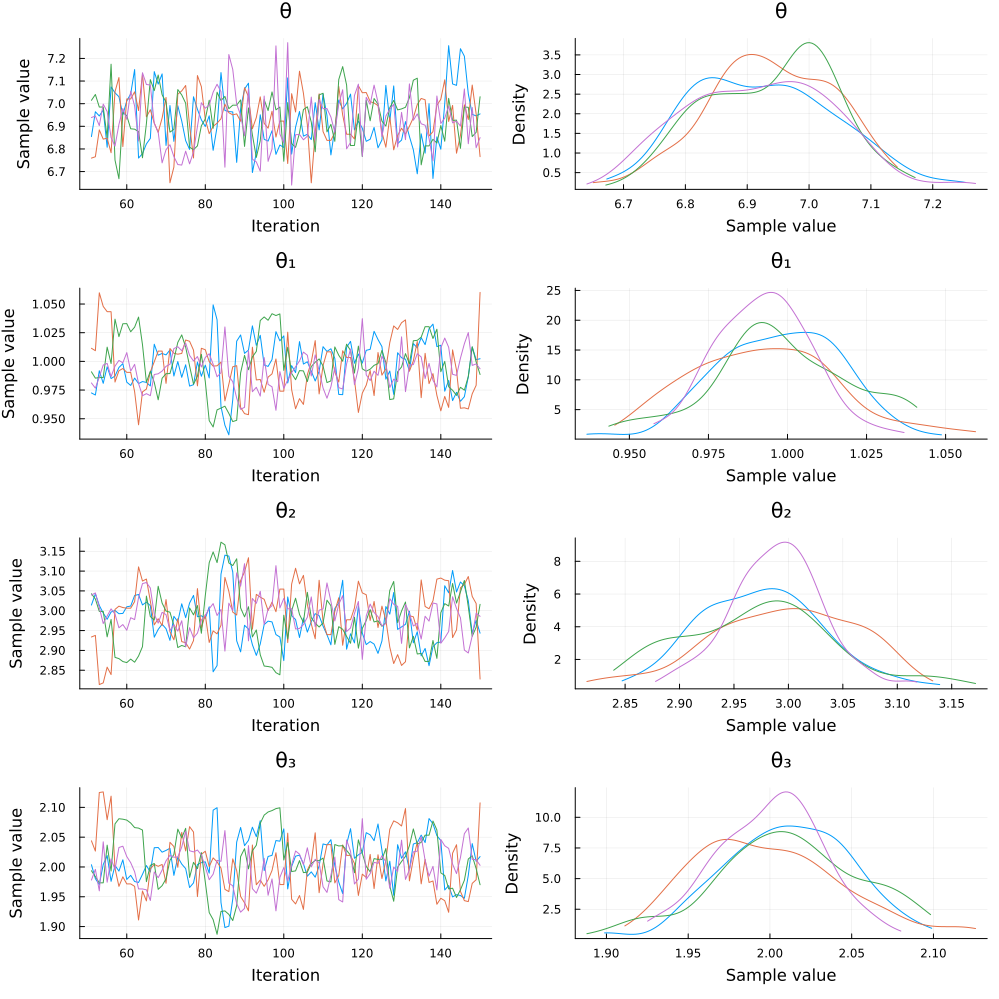

Bayesian inference with Turing.jl
The compatibility with Distributions.jl's API allows a lot of interactions with the broader ecosystem. One of the firsts examples that we discovered was the possibility to do Bayesian inference of model parameters (copula included) with Turing.jl.
Consider that we have a given model with a certain copula and certain marginals, all having parameters to be fitted. Then we can use Turing's @addlogprob! to compute the loglikelihood of our model and maximize it around the parameters alongside the chain as follows:
using Copulas
using Distributions
using Random
using Turing
using StatsPlots
Random.seed!(123)
true_θ = 7
true_θ₁ = 1
true_θ₂ = 3
true_θ₃ = 2
D = SklarDist(ClaytonCopula(3,true_θ), (Exponential(true_θ₁), Pareto(true_θ₂), Exponential(true_θ₃)))
draws = rand(D, 2000)
@model function copula(X)
# Priors
θ ~ TruncatedNormal(1.0, 1.0, -1/3, Inf)
θ₁ ~ TruncatedNormal(1.0, 1.0, 0, Inf)
θ₂ ~ TruncatedNormal(1.0, 1.0, 0, Inf)
θ₃ ~ TruncatedNormal(1.0, 1.0, 0, Inf)
# Build the parametric model
C = ClaytonCopula(3,θ)
X₁ = Exponential(θ₁)
X₂ = Pareto(θ₂)
X₃ = Exponential(θ₃)
D = SklarDist(C, (X₁, X₂, X₃))
# Compute the final loglikelyhood
Turing.Turing.@addlogprob! loglikelihood(D, X)
end
sampler = NUTS() # MH() works too
chain = sample(copula(draws), sampler, MCMCThreads(), 100, 4)Note that we truncated the θ parameter at -1/3 and not 0 as the ClaytonCopula can handle negative dependence structures. We only ran 100 steps for efficiency reasons, you can increase this number easily if needed. The upper code outputs summary of the chain :
Summary Statistics:
| parameters | true value | mean | std | mcse | ess_bulk | ess_tail | rhat | esspersec |
|---|---|---|---|---|---|---|---|---|
| Symbol | Float64 | Float64 | Float64 | Float64 | Float64 | Float64 | Float64 | Float64 |
| θ | 7.0 | 6.9319 | 0.1150 | 0.0067 | 291.8858 | 267.1353 | 1.0061 | 0.7238 |
| θ₁ | 1.0 | 0.9954 | 0.0209 | 0.0019 | 116.6941 | 94.3070 | 1.0347 | 0.2894 |
| θ₂ | 3.0 | 2.9839 | 0.0639 | 0.0062 | 108.9185 | 105.5284 | 1.0390 | 0.2701 |
| θ₃ | 2.0 | 2.0055 | 0.0418 | 0.0039 | 114.7324 | 109.5396 | 1.0328 | 0.2845 |
Quantiles:
| parameters | 2.5% | 25.0% | 50.0% | 75.0% | 97.5% |
|---|---|---|---|---|---|
| Symbol | Float64 | Float64 | Float64 | Float64 | Float64 |
| θ | 6.7286 | 6.8438 | 6.9330 | 7.0150 | 7.1436 |
| θ₁ | 0.9555 | 0.9818 | 0.9953 | 1.0093 | 1.0386 |
| θ₂ | 2.8606 | 2.9426 | 2.9859 | 3.0196 | 3.1186 |
| θ₃ | 1.9254 | 1.9758 | 2.0056 | 2.0336 | 2.0923 |
And then plot(chain) produces the following plot:

Similar approaches could be used to fit many other dependence structures in a Bayesian settings. The upper example showcases a parametric estimation of a sampling model, but a Bayesian regression with an error structure given by a parametric copula is as easy to implement.
This was run on the following environment:
julia> versioninfo()
Julia Version 1.10.0
Commit 3120989f39 (2023-12-25 18:01 UTC)
[...]
(env) pkg> status
[ae264745] Copulas v0.1.20
[31c24e10] Distributions v0.25.107
[f3b207a7] StatsPlots v0.15.6
[fce5fe82] Turing v0.30.3
[9a3f8284] Random